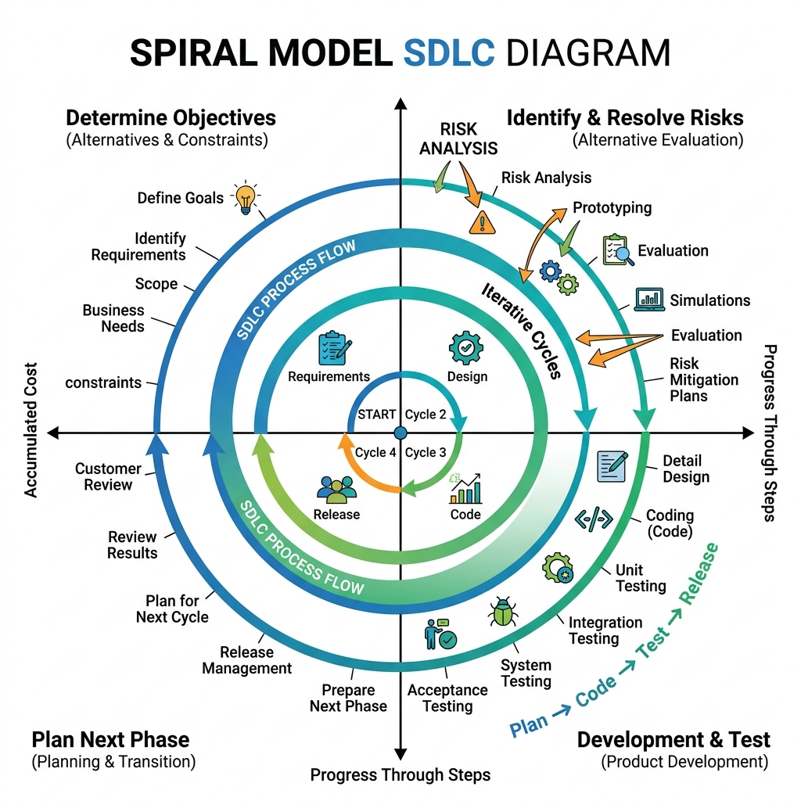

Group A — Short Answer Questions (1 Mark Each)
Ans: Concise point-wise definition/formula for Define Software Engineering. in accordance with MAKAUT examination pattern.
Ans: Concise point-wise definition/formula for What is Software Development Life Cycle (SDLC)? in accordance with MAKAUT examination pattern.
Ans: Concise point-wise definition/formula for Define Waterfall Model. in accordance with MAKAUT examination pattern.
Ans: Concise point-wise definition/formula for What is Spiral Model? in accordance with MAKAUT examination pattern.
Ans: Concise point-wise definition/formula for Define Prototyping Model. in accordance with MAKAUT examination pattern.
Ans: Concise point-wise definition/formula for What is Agile Methodology? in accordance with MAKAUT examination pattern.
Ans: Concise point-wise definition/formula for Define Scrum Sprint. in accordance with MAKAUT examination pattern.
Ans: Concise point-wise definition/formula for What is Product Backlog? in accordance with MAKAUT examination pattern.
Ans: Concise point-wise definition/formula for Define Sprint Backlog. in accordance with MAKAUT examination pattern.
Ans: Concise point-wise definition/formula for What is Software Requirement Specification (SRS)? in accordance with MAKAUT examination pattern.
Ans: Concise point-wise definition/formula for Define Functional Requirement. in accordance with MAKAUT examination pattern.
Ans: Concise point-wise definition/formula for Define Non-Functional Requirement. in accordance with MAKAUT examination pattern.
Ans: Concise point-wise definition/formula for What is Requirement Elicitation? in accordance with MAKAUT examination pattern.
Ans: Concise point-wise definition/formula for Define Use Case in UML. in accordance with MAKAUT examination pattern.
Ans: Concise point-wise definition/formula for What is Data Flow Diagram (DFD)? in accordance with MAKAUT examination pattern.
Ans: Concise point-wise definition/formula for Define Cohesion in software design. in accordance with MAKAUT examination pattern.
Ans: Concise point-wise definition/formula for Define Coupling in software design. in accordance with MAKAUT examination pattern.
Ans: Concise point-wise definition/formula for What is High Cohesion and Low Coupling? in accordance with MAKAUT examination pattern.
Ans: Concise point-wise definition/formula for Define Modularity. in accordance with MAKAUT examination pattern.
Ans: Concise point-wise definition/formula for What is Software Architecture? in accordance with MAKAUT examination pattern.
Ans: Concise point-wise definition/formula for Define Cyclomatic Complexity. in accordance with MAKAUT examination pattern.
Ans: Concise point-wise definition/formula for What is McCabe's Cyclomatic Complexity formula? in accordance with MAKAUT examination pattern.
Ans: Concise point-wise definition/formula for Define White-Box Testing. in accordance with MAKAUT examination pattern.
Ans: Concise point-wise definition/formula for Define Black-Box Testing. in accordance with MAKAUT examination pattern.
Ans: Concise point-wise definition/formula for What is Unit Testing? in accordance with MAKAUT examination pattern.
Ans: Concise point-wise definition/formula for What is Integration Testing? in accordance with MAKAUT examination pattern.
Ans: Concise point-wise definition/formula for Define System Testing. in accordance with MAKAUT examination pattern.
Ans: Concise point-wise definition/formula for What is Acceptance Testing? in accordance with MAKAUT examination pattern.
Ans: Concise point-wise definition/formula for Define Alpha Testing. in accordance with MAKAUT examination pattern.
Ans: Concise point-wise definition/formula for Define Beta Testing. in accordance with MAKAUT examination pattern.
Ans: Concise point-wise definition/formula for What is Equivalence Partitioning? in accordance with MAKAUT examination pattern.
Ans: Concise point-wise definition/formula for What is Boundary Value Analysis (BVA)? in accordance with MAKAUT examination pattern.
Ans: Concise point-wise definition/formula for Define Regression Testing. in accordance with MAKAUT examination pattern.
Ans: Concise point-wise definition/formula for What is Smoke Testing? --- Page 2 --- in accordance with MAKAUT examination pattern.
Ans: Concise point-wise definition/formula for What is Sanity Testing? in accordance with MAKAUT examination pattern.
Ans: Concise point-wise definition/formula for Define Stub and Driver in integration testing. in accordance with MAKAUT examination pattern.
Ans: Concise point-wise definition/formula for What is COCOMO Model? in accordance with MAKAUT examination pattern.
Ans: Concise point-wise definition/formula for Define Function Point (FP) analysis. in accordance with MAKAUT examination pattern.
Ans: Concise point-wise definition/formula for What is Software Reliability? in accordance with MAKAUT examination pattern.
Ans: Concise point-wise definition/formula for Define Mean Time Between Failures (MTBF). in accordance with MAKAUT examination pattern.
Ans: Concise point-wise definition/formula for Define Mean Time To Failure (MTTF). in accordance with MAKAUT examination pattern.
Ans: Concise point-wise definition/formula for Define Mean Time To Repair (MTTR). in accordance with MAKAUT examination pattern.
Ans: Concise point-wise definition/formula for What is Software Quality Assurance (SQA)? in accordance with MAKAUT examination pattern.
Ans: Concise point-wise definition/formula for Define CMMI. in accordance with MAKAUT examination pattern.
Ans: Concise point-wise definition/formula for What is Software Maintenance? in accordance with MAKAUT examination pattern.
Ans: Concise point-wise definition/formula for Define Corrective Maintenance. in accordance with MAKAUT examination pattern.
Ans: Concise point-wise definition/formula for Define Adaptive Maintenance. in accordance with MAKAUT examination pattern.
Ans: Concise point-wise definition/formula for Define Perfective Maintenance. in accordance with MAKAUT examination pattern.
Ans: Concise point-wise definition/formula for Define Preventive Maintenance. in accordance with MAKAUT examination pattern.
Ans: Concise point-wise definition/formula for What is Software Re-engineering? in accordance with MAKAUT examination pattern.
Ans: Concise point-wise definition/formula for Define Reverse Engineering. in accordance with MAKAUT examination pattern.
Ans: Concise point-wise definition/formula for What is CASE Tool? in accordance with MAKAUT examination pattern.
Group B — Medium / Descriptive Questions (5 Marks Each)
Definition: The Classical Waterfall Model is a sequential, linear SDLC model in which each phase must be completed and formally signed off before the next phase begins, with no overlap between phases.
- Advantages: Simple to understand and manage; each phase has clear deliverables and a review process; works well for small projects with stable, well-understood requirements; enforces disciplined documentation.
- Limitations: No working software is produced until late in the cycle; assumes requirements can be frozen upfront which is unrealistic; difficult and costly to accommodate change once a phase is signed off; risk and uncertainty are discovered too late; does not model iteration or feedback between non-adjacent phases.
- Suitability: Best for short, well-specified projects (e.g. compiler/utility development) rather than large evolving systems.

Definition: The Spiral Model (Boehm, 1988) is a risk-driven process model that combines iterative prototyping with the systematic, controlled aspects of the waterfall model, represented as a spiral with multiple loops, each loop being one phase/iteration.
- Q1 - Determine objectives: identify objectives, alternatives, and constraints for that iteration.
- Q2 - Identify and resolve risks: analyse alternatives, build prototypes to resolve high-risk elements.
- Q3 - Develop and validate: select a development model based on residual risk and produce/test the next-level product.
- Q4 - Plan next iteration: review with customer, plan the following spiral loop.
- Advantages: explicit risk management, suits large/high-risk projects, allows incremental delivery.
- Limitations: requires risk-assessment expertise, costly for small low-risk projects, hard to fix budget/schedule in advance.
Definition: The Prototyping Model builds a quick, working (often partial) model of the system early, uses customer feedback on it to refine requirements, and repeats until the requirements stabilise before full-scale development.
- Types: Throwaway (rapid) prototyping - discarded after use; Evolutionary prototyping - refined into the final product.
- Suitability: Requirements are unclear or the user cannot fully specify needs upfront; UI-heavy or novel systems; useful for validating feasibility.
- Advantages: Early user feedback, reduced misunderstanding of requirements, better user involvement.
- Limitations: Users may mistake the prototype for the final system; scope creep from continual refinement; extra cost if the prototype is thrown away.
Definition: Scrum is a lightweight Agile framework that organises work into fixed-length iterations called Sprints (typically 2-4 weeks), delivering a potentially shippable product increment at the end of each Sprint.
- Roles: Product Owner (owns/prioritises backlog), Scrum Master (facilitator, removes impediments), Development Team (self-organising, cross-functional).
- Events: Sprint Planning, Daily Scrum (stand-up), the Sprint itself, Sprint Review (demo), Sprint Retrospective (process improvement).
- Artifacts: Product Backlog (prioritised feature list), Sprint Backlog (subset for current sprint), Increment (working, potentially shippable product).
Definition: A Software Requirements Specification (SRS) is the formal document that completely describes what the software system must do (and must not do), serving as the contract between customer and developer.
Characteristics of a good SRS (IEEE 830):
| Characteristic | Meaning |
|---|---|
| Correct | Every requirement stated actually reflects the real need of the customer. |
| Complete | All functional, non-functional, and interface requirements are included; no "TBD" left unresolved. |
| Unambiguous | Each requirement has exactly one interpretation, avoiding vague terms like "user-friendly". |
| Verifiable | A finite, cost-effective process (test/inspection/demonstration) can check whether the requirement is met. |
| Consistent | No requirement conflicts with another requirement in the document. |
| Ranked | Requirements are prioritised by importance/stability. |
| Modifiable | Structure allows changes to be made easily, completely, and consistently. |
| Traceable | Origin of each requirement is clear and it can be traced forward to design/code/tests. |
These characteristics ensure the SRS can be used unambiguously by designers, testers, and project managers, and reduce costly rework caused by requirement defects discovered late.
Definition: Requirement Elicitation is the process of gathering software requirements from stakeholders (users, customers, domain experts) through systematic techniques, forming the input to the SRS.
| Technique | Description | Best used when |
|---|---|---|
| Interviews | One-on-one/group structured or unstructured discussion with stakeholders. | Deep, qualitative understanding of individual needs is required. |
| Questionnaires/Surveys | Standard set of written questions circulated to many stakeholders. | Requirements must be gathered from a large, geographically spread user base. |
| Prototyping | A working mock-up is shown to users to elicit feedback and refine unclear requirements. | Users cannot articulate needs without seeing something concrete (esp. UI-heavy systems). |
| Brainstorming | Group session to generate a wide range of ideas/requirements quickly. | Early-stage, open-ended requirement discovery. |
| Observation | Analyst observes users performing tasks in their real work environment. | Users cannot fully explain implicit/tacit workflow knowledge. |
| Use Cases/Scenarios | Concrete step-by-step interaction scenarios between actor and system. | Behavioural/functional requirements need to be captured precisely. |
Effective elicitation typically combines several of these techniques, followed by requirement analysis, negotiation (to resolve conflicts), and formal documentation in the SRS.
Definition: A Data Flow Diagram (DFD) is a graphical tool that models a system purely in terms of the flow of data between processes, data stores, and external entities, without showing control logic or timing.
| Symbol | Meaning |
|---|---|
| Circle / Rounded Rectangle | Process - transforms incoming data flow into outgoing data flow. |
| Arrow | Data Flow - direction in which data moves; labelled with the data name. |
| Open-ended Rectangle | Data Store - a repository of data at rest (file/database). |
| Square/Rectangle | External Entity (Source/Sink) - outside the system boundary, e.g. a user or another system. |
- Leveling: Level-0 (Context diagram) shows the whole system as one process with external entities; Level-1 decomposes it into major sub-processes; Level-2+ further decomposes complex processes - each child level must conserve the inputs/outputs of its parent process (balancing).
- Rules: No data flow directly between two external entities or two data stores; every process must have at least one input and one output; process names are verb phrases, data stores are noun phrases.
Definition: A Use Case Diagram is a UML behavioural diagram that captures the functional requirements of a system by showing Actors (external users/systems) and Use Cases (units of functionality) and the relationships between them.
- Actor: A role played by a user or external system that interacts with the system (stick figure).
- Use Case: An oval representing a discrete piece of functionality/goal the actor achieves.
- <<include>>: Mandatory relationship - the base use case always incorporates the behaviour of the included use case (e.g. "Place Order" always includes "Verify OTP" as a sub-step).
- <<extend>>: Optional/conditional relationship - the extending use case adds behaviour to the base use case only under certain conditions (e.g. "Make Payment" is extended by "Apply Discount Coupon" only if the user has a coupon).
Definition: Cohesion measures how strongly the internal elements of a single module are functionally related to each other. High cohesion is desirable - a module should do one well-defined job.
| Type | Description | Strength |
|---|---|---|
| Functional | Every element contributes to a single, well-defined task. | Highest (best) |
| Sequential | Output of one element is the input to the next. | High |
| Communicational | Elements operate on the same input/output data. | Medium-High |
| Procedural | Elements grouped because they follow a fixed sequence of execution. | Medium |
| Temporal | Elements grouped because they execute at the same time (e.g. initialization module). | Low-Medium |
| Logical | Elements perform logically similar functions selected via a flag/parameter. | Low |
| Coincidental | Elements have no meaningful relationship at all; grouped arbitrarily. | Lowest (worst) |
High-cohesion modules are easier to understand, reuse, test, and maintain in isolation, since a change to the module's single responsibility does not ripple into unrelated logic. Cohesion is an internal, intra-module quality attribute, contrasted with coupling which measures inter-module dependency.
Definition: Coupling measures the degree of interdependence between two separate modules. Low coupling is desirable - modules should be as independent as possible so a change in one does not force changes in another.
| Type | Description | Strength |
|---|---|---|
| Content | One module directly modifies or relies on the internal data/code of another. | Highest (worst) |
| Common | Modules share global data. | High |
| External | Modules share an externally imposed data format/protocol/interface. | Medium-High |
| Control | One module passes a control flag telling another module what to do. | Medium |
| Stamp | Modules share a composite data structure but use only parts of it. | Low-Medium |
| Data | Modules communicate using only simple parameter passing of elementary data. | Lowest (best) |
A well-designed system aims for high cohesion, low coupling: modules that are internally focused and interact with each other only through small, well-defined interfaces, minimizing the ripple effect of change and maximizing reusability and testability.
Definition: McCabe's Cyclomatic Complexity V(G) is a quantitative measure of the number of linearly independent paths through a program's control flow graph, indicating structural/testing complexity.
Formulas: V(G) = E - N + 2P (E = edges, N = nodes, P = connected components, usually 1); equivalently V(G) = D + 1 where D = number of decision (predicate) nodes; or V(G) = number of regions in the planar graph (including the outer region).
Worked example (this graph): Node 2 is the only decision (predicate) node, so cross-check via V(G) = D + 1 = 1 + 1 = 2... (for a single if-else, D=1 gives V=2; if node 5 is also reached only after a merge, both formulas must use the same graph - here E=6 edges (1-2,2-3,2-4,3-5,4-5, plus one more) confirm via direct edge count). V(G) equals the number of independent paths needed to achieve 100% branch coverage, and gives a lower bound on the number of test cases for path testing.
Use: V(G) > 10 for a module signals high complexity and higher defect risk (a common maintainability threshold).
Definition: White-Box (structural/glass-box) Testing designs test cases based on the internal logic/code structure of the program, aiming to exercise specific code elements.
| Technique | Criterion | Coverage Formula |
|---|---|---|
| Statement Coverage | Every executable statement is executed at least once. | (stmts executed / total stmts) × 100 |
| Branch (Decision) Coverage | Every branch (true/false outcome of each decision) is taken at least once. | (branches taken / total branches) × 100 |
| Path Coverage | Every linearly independent path (per McCabe's V(G)) is executed at least once. | Number of test cases ≥ V(G) |
- Statement coverage is the weakest criterion - it can miss an entire untaken "else" branch even though every line was hit.
- Branch coverage subsumes statement coverage (100% branch coverage implies 100% statement coverage) and is the most common industry minimum bar.
- Path coverage is the strongest but often infeasible for loops (paths grow exponentially/infinitely), so Basis Path Testing (test only the V(G) independent paths) is used as a practical compromise.
- Other white-box techniques: condition coverage, loop testing (0, 1, many iterations), data-flow testing.
Definition: Black-Box Testing designs test cases purely from the specification (input-output behaviour) without knowledge of internal code structure.
Equivalence Partitioning (EP): Divides the input domain into partitions (classes) such that all values in a partition are expected to be treated the same way by the program; only one representative value per partition needs to be tested, reducing test-case count while retaining coverage.
Boundary Value Analysis (BVA): Since defects cluster at the edges of input ranges, BVA selects test values exactly at, just below, and just above each boundary of a valid/invalid partition.
Mini example: For an input field accepting age 18-60:
| Technique | Test values chosen |
|---|---|
| Equivalence Partitioning | Invalid-low: 10; Valid: 35; Invalid-high: 70 (3 classes → 3 test cases) |
| Boundary Value Analysis | 17, 18, 19 (lower boundary); 59, 60, 61 (upper boundary) → 6 test cases |
EP is used to keep the test suite small while still sampling every distinct behaviour class; BVA is layered on top of EP because empirically most defects occur at or near partition boundaries rather than in the interior of a range.
Definition: Integration Testing checks the interfaces and interaction between individually unit-tested modules when they are combined into subsystems.
| Basis | Top-Down | Bottom-Up |
|---|---|---|
| Order | Test high-level (control) modules first, descending | Test low-level (utility) modules first, ascending |
| Needs | Stubs (dummy versions of un-built lower modules) | Drivers (dummy callers to invoke lower modules) |
| Advantage | Major design flaws surface early; early skeletal system visible | Critical low-level utility modules thoroughly tested early |
| Disadvantage | Stub development overhead; low-level modules tested late | No working skeleton until late; driver overhead |
Definition: Basic COCOMO (COnstructive COst MOdel, Boehm 1981) estimates effort and schedule solely from estimated project size in KLOC (thousand lines of code), for three project modes.
Formulas: E = a × (KLOC)^b person-months, D = c × (E)^d months, Staff = E / D people.
| Mode | a | b | c | d | Characteristics |
|---|---|---|---|---|---|
| Organic | 2.4 | 1.05 | 2.5 | 0.38 | Small team, familiar, flexible requirements (<50 KLOC) |
| Semi-detached | 3.0 | 1.12 | 2.5 | 0.35 | Mixed experience team, mix of rigid/flexible requirements |
| Embedded | 3.6 | 1.20 | 2.5 | 0.32 | Complex, tight constraints (hardware, real-time, regulations) |
Mini example (Organic, 10 KLOC): E = 2.4 × 10^1.05 ≈ 2.4 × 11.22 ≈ 26.9 PM; D = 2.5 × 26.9^0.38 ≈ 2.5 × 3.83 ≈ 9.6 months; Staff ≈ 26.9/9.6 ≈ 2.8 ≈ 3 people.
Basic COCOMO gives a rough order-of-magnitude estimate; Intermediate COCOMO refines it with 15 Cost Driver attributes, and Detailed COCOMO applies drivers at the sub-system/phase level.
Definition: Function Point Analysis (FPA) measures software size from a user/functional perspective (independent of programming language) by counting and weighting five components of external functionality.
| Component | Description | Weight (Simple/Avg/Complex) |
|---|---|---|
| External Input (EI) | Data entering the system from outside | 3 / 4 / 6 |
| External Output (EO) | Data leaving the system (reports, messages) | 4 / 5 / 7 |
| External Inquiry (EQ) | Input-output combination requiring no data update | 3 / 4 / 6 |
| Internal Logical File (ILF) | Data maintained within the system | 7 / 10 / 15 |
| External Interface File (EIF) | Data referenced from another system | 5 / 7 / 10 |
Calculation: UFP = Σ (count × weight) for all components, giving the Unadjusted Function Points. Then VAF = 0.65 + 0.01 × ΣFi where ΣFi is the sum of 14 General System Characteristics (GSC) rated 0-5. Finally FP = UFP × VAF.
FP is used to derive productivity (FP/person-month), cost (cost/FP), and can be converted to estimated LOC using a language-specific backfiring factor, enabling early, language-independent size estimation before code is written.
Definition: Gantt Charts and PERT/CPM are the two classical project scheduling tools; both derive from a Work Breakdown Structure but visualise/compute different information.
| Basis | Gantt Chart | PERT/CPM |
|---|---|---|
| Representation | Bar chart against a time axis | Activity-on-node/arrow network diagram |
| Shows | Task start/end dates, overlap, calendar progress | Task dependencies, critical path, slack/float |
| Best for | Tracking day-to-day progress, resource allocation | Identifying the critical path and schedule risk |
| Dependency view | Weak - dependencies not obvious | Strong - explicit precedence arrows |
PERT additionally supports three-point time estimation (optimistic, most-likely, pessimistic) to compute expected duration under uncertainty; CPM uses single deterministic estimates. In practice both are used together: PERT/CPM for planning/critical-path analysis, Gantt for ongoing tracking.
Definition: Software Risk Management is the systematic process of identifying, analysing, and controlling potential events that could negatively impact a software project's cost, schedule, or quality.
- Identification: List potential risks (technical, schedule, budget, personnel, requirement volatility) using checklists, brainstorming, past-project data.
- Analysis (Assessment): Estimate probability of occurrence and impact/severity for each risk; compute Risk Exposure RE = Probability × Impact to prioritise.
- Planning: Devise mitigation strategies (avoid, transfer, reduce probability, reduce impact, accept) and contingency plans for high-RE risks; document in an RMMM plan.
- Monitoring: Track risk indicators throughout the project, re-assess risk status at each milestone, and trigger contingency plans if a risk materialises.
Definition: Software Quality Assurance (SQA) is the set of planned, systematic activities applied throughout the SDLC to ensure that software processes and products conform to established standards and satisfy quality requirements.
- SQA planning: Prepare an SQA plan defining standards, review schedule, and audit procedures for the project.
- Formal Technical Reviews (FTR): Peer reviews/walkthroughs/inspections of requirements, design, and code to detect defects early.
- Multi-testing strategy: Enforce a defined testing strategy (unit → integration → system → acceptance) and verify its execution.
- Standards enforcement: Ensure adherence to coding standards, naming conventions, and documentation templates.
- Change control: Manage change through a formal process to prevent uncontrolled scope/requirement drift.
- Measurement & metrics: Collect, analyse and report SQA metrics (defect density, review efficiency) to track quality trends.
- Record keeping & reporting: Maintain records of every SQA activity and escalate unresolved quality issues to senior management.
SQA is a management function distinct from testing: testing finds defects in the product, while SQA ensures the process used to build the product is followed correctly, which prevents defects from being introduced in the first place.
Definition: CMMI (Capability Maturity Model Integration) is a process-improvement framework that measures an organisation's software process maturity on a 5-level ordinal scale.
| Level | Name | Characteristics |
|---|---|---|
| 1 | Initial | Ad hoc, chaotic processes; success depends on individual heroics. |
| 2 | Managed | Basic project management (requirements, planning, tracking) in place per project. |
| 3 | Defined | Processes standardised, documented, and tailored organisation-wide. |
| 4 | Quantitatively Managed | Processes measured statistically and controlled using quantitative data. |
| 5 | Optimizing | Continuous process improvement based on quantitative feedback and innovation. |
Definition: Software Maintenance is the modification of a software product after delivery to correct defects, adapt to new environments, improve performance, or prevent future problems - typically the most expensive phase of the SDLC.
| Type | Purpose | Example |
|---|---|---|
| Corrective | Fix defects/bugs discovered in the field after release. | Patching a crash caused by a null-pointer bug. |
| Adaptive | Modify software to work in a new/changed environment (OS, hardware, regulation). | Updating an app for a new Android API level. |
| Perfective | Enhance functionality or improve performance/usability based on user feedback. | Adding a new report feature, optimising a slow query. |
| Preventive | Restructure/document code to improve future maintainability before problems occur. | Refactoring a module to reduce technical debt. |
Studies (Lientz & Swanson) show Perfective maintenance consumes the largest share (~50-65%) of total maintenance effort, followed by Adaptive (~18-25%), Corrective (~17-21%), and Preventive (~4%) - underscoring why maintainability must be designed in from the start rather than treated as an afterthought.
Definition: Software Re-engineering examines and alters a legacy system to reconstitute it in a new, improved form, typically to improve maintainability without changing its overall functionality; Reverse Engineering is the sub-step of analysing existing code/design to recover higher-level abstractions.
- Reverse Engineering: Analyse legacy source code to recover design documentation, data models, and business rules ("code to design").
- Restructuring: Transform code/data internally (e.g. improve structure, remove dead code) without changing external behaviour.
- Forward Engineering: Use the recovered/improved design to build a new version of the system using modern tools and architecture ("design to code").
- Benefit: Recovers business value locked in legacy systems while reducing risk versus a full from-scratch rewrite.
Definition: Verification and Validation (V&V) are complementary quality-control activities that together ensure a software product is built correctly and is the correct product.
| Basis | Verification | Validation |
|---|---|---|
| Question answered | "Are we building the product right?" | "Are we building the right product?" |
| Checks against | Specification/design documents | Actual user needs/requirements |
| Activities | Reviews, walkthroughs, inspections, static analysis | Actual execution/testing of the software (unit, integration, system, acceptance testing) |
| Timing | Performed throughout development (static) | Performed on a working product/increment (dynamic) |
| Example | Reviewing that the design correctly implements the SRS. | User Acceptance Testing confirms the delivered system meets the business need. |
Boehm's classic distinction is: Verification = "building the product right" (process conformance); Validation = "building the right product" (fitness for purpose). Both are required - a system can be perfectly verified against a flawed specification and still fail validation with real users.
Definition: A Formal Technical Review (FTR) is a structured, planned meeting of peers/technical staff to evaluate a software work product (requirement, design, code) to detect defects before they propagate to later phases.
- Objectives: Uncover errors in function/logic/implementation; verify the product meets requirements; ensure the product is developed uniformly per standards; make projects more manageable.
- Participants: Producer (author), Review Leader (moderator), 2-5 Reviewers, Recorder (notes issues).
- Process: Planning → Overview meeting (author briefs reviewers) → Individual preparation → Review meeting (issues raised, not fixed on the spot) → Rework by producer → Follow-up to verify fixes.
- Code Walkthrough: An informal FTR variant where the author "walks" reviewers through the code line by line, using test data mentally traced through the logic, primarily to educate and surface obvious defects.
- Formal Inspection (Fagan): A stricter FTR variant with defined roles, checklists, and statistically tracked defect data, generally more effective than walkthroughs at defect detection.
Definition: A software architecture style is a reusable, named organisation of components, connectors, and constraints that solves a recurring system-structuring problem.
| Style | Structure | Best for |
|---|---|---|
| Layered | Hierarchical layers, each using only the layer below (e.g. OS, network stacks) | Systems needing clear separation of concerns and portability |
| Client-Server | Client requests services from a centralised server over a network | Resource sharing, centralised data control (e.g. web/DB apps) |
| Microservices | Independently deployable, loosely coupled services communicating via APIs | Large, evolving systems needing independent scaling/deployment |
Definition: SOLID is a mnemonic for five object-oriented design principles (Robert C. Martin) that make software easier to understand, maintain, and extend.
| Principle | Statement |
|---|---|
| S - Single Responsibility | A class should have only one reason to change (one responsibility). |
| O - Open/Closed | Classes should be open for extension but closed for modification. |
| L - Liskov Substitution | Objects of a subclass should be replaceable for objects of the base class without breaking correctness. |
| I - Interface Segregation | Clients should not be forced to depend on interfaces/methods they do not use. |
| D - Dependency Inversion | High-level modules should depend on abstractions, not on low-level concrete implementations. |
Applying SOLID reduces coupling and increases cohesion, so a change to one requirement affects the minimum number of classes, and new features can be added by extending (subclassing/composing) rather than editing tested code - directly supporting maintainability and testability goals in software engineering.
Definition: Design Patterns are proven, reusable solution templates to recurring object-oriented design problems, classified by the Gang-of-Four into three categories.
| Category | Purpose | Examples |
|---|---|---|
| Creational | Deal with object creation mechanisms, hiding instantiation logic | Singleton, Factory Method, Abstract Factory, Builder, Prototype |
| Structural | Deal with composing classes/objects into larger structures | Adapter, Decorator, Facade, Composite, Proxy, Bridge |
| Behavioral | Deal with communication/responsibility distribution between objects | Observer, Strategy, Command, State, Template Method, Iterator |
- Creational example: Singleton ensures only one instance of a class (e.g. a configuration manager) exists globally.
- Structural example: Adapter converts the interface of an existing class into another interface clients expect, enabling incompatible classes to work together.
- Behavioral example: Observer lets multiple dependent objects (subscribers) get automatically notified when a subject's state changes (used in MVC/event systems).
Definition: Shneiderman's "Eight Golden Rules" (extended set) of interface design are heuristics for designing consistent, predictable, and user-friendly user interfaces.
- Strive for consistency: Use consistent terminology, layout, colour, and command sequences across similar situations.
- Enable frequent users to use shortcuts: Provide abbreviations, function keys, and macros for expert users.
- Offer informative feedback: Every user action should get an appropriate, proportionate system response.
- Design dialogues to yield closure: Group action sequences with a clear beginning, middle, and end (confirmation on completion).
- Offer simple error handling: Detect errors, offer simple, comprehensible recovery instructions.
- Permit easy reversal of actions (Undo): Reduces anxiety since mistakes can be undone.
- Support internal locus of control: Users should feel they are in charge of the system, not the reverse.
- Reduce short-term memory load: Keep displays simple, minimize the need to remember information across screens.
Following these rules reduces user errors and training time, and increases user satisfaction and productivity - a key non-functional quality goal in UI/UX engineering.
Definition: Software metrics are quantitative measures used to assess software size, complexity, quality, and process efficiency, enabling objective tracking and prediction.
| Category | Metric | Formula/Meaning |
|---|---|---|
| Size | LOC (Lines of Code) | Count of source lines (often KLOC, thousands of lines) |
| Size | Function Points | Weighted count of external functional units (language-independent) |
| Complexity | Cyclomatic Complexity V(G) | V(G) = E − N + 2 (number of independent paths) |
| Complexity | Halstead's Volume | Based on counts of operators/operands in the code |
| Defect Density | Defects per KLOC/FP | Defect Density = Total Defects / Size (KLOC or FP) |
Size metrics feed effort/cost estimation (COCOMO, FPA); complexity metrics flag error-prone/hard-to-test modules for extra review; defect density tracks quality trends across releases and helps benchmark against industry norms (e.g. <1 defect/KLOC for mature processes).
Definition: Software Configuration Management (SCM) is the discipline of systematically controlling changes to software work products (code, docs, requirements) throughout the SDLC, maintaining integrity and traceability.
- Configuration Identification: Identify Software Configuration Items (SCIs) - source files, requirements, test cases - and assign unique identifiers/versions.
- Version Control: Track successive revisions of each SCI over time; systems like Git, SVN maintain full history, allow branching/merging, and enable rollback to any prior state.
- Change Control: Formal process (Change Request → Impact Analysis → Change Control Board approval → Implementation) to manage modifications after a baseline is set.
- Baselines: Formally reviewed and agreed-upon versions of SCIs (e.g. "Requirements Baseline", "v1.0 Release Baseline") that serve as the basis for further development and change comparison.
- Configuration Auditing: Verify that the delivered product matches its specification and that all changes were properly authorised and recorded.
- Status Accounting: Record and report the status of change requests and SCI versions to stakeholders.
SCM enables reproducible builds, parallel team development via branching, and rapid recovery from defects by reverting to a known-good baseline.
Definition: Fault, Error, and Failure describe the causal chain of a software defect from its root cause in the code to its observable consequence for the user.
- Fault (Defect/Bug): An incorrect step, process, or data definition in the code - the static root cause introduced by a human mistake.
- Error: An incorrect internal program state (wrong variable value) produced when a fault is executed.
- Failure: The externally observable deviation of the system's actual behaviour from its specified/expected behaviour, visible to the user.
- Relationship: A fault, when triggered by specific input/execution conditions, causes an error in program state, which may (or may not, if masked) propagate to become a visible failure.
Definition: System Testing validates the complete, integrated software system against its specified requirements under conditions that simulate real operating environments, going beyond functional correctness to non-functional qualities.
| Type | Purpose | Typical technique |
|---|---|---|
| Performance Testing | Verify response time/throughput meets requirements under expected load. | Measure response time at defined transaction rates. |
| Stress Testing | Evaluate behaviour beyond normal capacity, up to and past breaking point. | Gradually increase load until failure; check graceful degradation. |
| Load Testing | Verify system sustains expected concurrent user/transaction volume. | Simulate target number of concurrent users over a sustained period. |
| Security Testing | Verify protection against unauthorized access, data breaches, and attacks. | Penetration testing, vulnerability scanning, authentication/authorization checks. |
These are all "non-functional" system tests (as opposed to functional system testing which checks feature correctness against the SRS). They are typically executed after functional system testing passes, and are essential for systems with strict SLAs, high user concurrency, or sensitive data.
Definition: Cleanroom Software Engineering is a formal, theory-based approach (developed at IBM by Harlan Mills) that aims to prevent defects through mathematically rigorous specification and design rather than removing them through debugging.
- Formal specification: The system is specified using a "box structure" notation (black-box, state-box, clear-box) with mathematically precise behaviour.
- Incremental development: The system is built in small, statistically-planned increments, each independently certified before integration.
- Correctness verification: Design and code are proven correct using formal, team-based mathematical verification (functional correctness proofs) instead of unit-level debugging by the author.
- No unit debugging by developers: Developers do not execute/unit-test their own code; correctness is verified purely through review and formal proof, drastically changing the traditional test-and-debug cycle.
- Statistical usage testing: Independent testers apply statistically-generated test cases representing actual usage patterns to certify reliability, rather than exhaustively testing every path.
Cleanroom trades higher up-front specification/verification effort for dramatically lower failure rates - used historically in safety-critical/high-reliability systems where the cost of field failure is very high.
Definition: Software Reliability is the probability that software will perform its required function, without failure, under stated conditions for a specified period of time. Reliability models mathematically predict this probability, guiding release decisions.
MTBF (Mean Time Between Failures): MTBF = MTTF + MTTR, where MTTF (Mean Time To Failure) is the average operating time before a failure occurs, and MTTR (Mean Time To Repair) is the average time to fix it and restore service.
Reliability function: R(t) = e^(−λt), where λ is the constant failure rate (failures per unit time). Availability = MTBF / (MTBF + MTTR).
Mini example: If a system fails on average once every 500 hours (MTTF = 500 hrs) and takes 5 hours to repair (MTTR = 5 hrs): MTBF = 505 hrs; Availability = 500/505 ≈ 99.01%.
Key reliability growth models: Jelinski-Moranda Model (failure rate proportional to remaining faults, decreases stepwise after each fix) and Musa's Basic Execution Time Model (failure intensity decreases exponentially with execution time as faults are removed) are used to predict the number of remaining defects and plan the release date at an acceptable reliability level.
Definition: Refactoring is the disciplined technique of restructuring existing code to improve its internal structure (readability, maintainability) without changing its external observable behaviour.
| Technique | What it does |
|---|---|
| Extract Method | Turns a code fragment into its own method with a descriptive name. |
| Rename Variable/Method | Improves clarity by using intention-revealing names. |
| Replace Conditional with Polymorphism | Moves branching logic based on type into subclasses. |
| Remove Duplicate Code | Consolidates repeated logic into a single shared method. |
| Move Method/Field | Relocates a member to the class where it more naturally belongs (improves cohesion). |
- Benefits: Improves readability and comprehension; reduces complexity and technical debt; makes the codebase easier and safer to extend; each small refactor is low-risk when backed by automated tests.
- Rule of thumb: Refactor in small, behaviour-preserving steps, running the regression test suite after every step ("red-green-refactor" in TDD).
Definition: Static Analysis examines source code without executing it, to detect defects, style violations, and potential vulnerabilities early and cheaply. Linting is a lightweight, fast form of static analysis focused on style/syntax rules.
- Linters (e.g. ESLint, Pylint, Checkstyle): Enforce coding-standard conformance - naming conventions, unused variables, formatting, unreachable code - typically run on every save/commit.
- Static analyzers (e.g. SonarQube, Coverity, PMD): Perform deeper analysis - detect null-pointer risks, resource leaks, security vulnerabilities (SQL injection, buffer overflow patterns), cyclomatic complexity hotspots, and code smells.
- How it works: Tools build an abstract syntax tree / control-flow graph of the code and pattern-match against a rule-set, without needing test data or a running environment.
- Benefits: Finds defects far earlier (and cheaper) than dynamic testing; enforces consistency across a large team; can be automated as a CI/CD pipeline gate to block merges that violate quality thresholds.
- Limitation: Cannot catch logic/requirement defects that only manifest at runtime with specific data - must be complemented by dynamic (black-box/white-box) testing.
Definition: Component-Based Software Engineering (CBSE) is a development approach that builds systems by assembling pre-built, independently deployable software components (often COTS - Commercial Off-The-Shelf) rather than writing everything from scratch.
- Component: A self-contained unit of functionality with a well-defined interface, deployable and replaceable independently of other components.
- Process: Component Qualification (does the candidate component meet functional/quality needs?) → Component Adaptation (wrapper/glue code if interfaces mismatch) → Composition (assemble components using an architecture/framework) → System Update.
- Advantages: Faster time-to-market via reuse; reduced development cost; improved reliability (components are pre-tested/battle-hardened); easier maintenance since components can be independently upgraded.
- Challenges: Component mismatch (interface/behaviour incompatibility - "impedance mismatch"), lack of control over third-party component evolution, integration/testing complexity, vendor lock-in and licensing constraints.
CBSE shifts the engineering focus from writing code to selecting, certifying, adapting, and composing components - central to modern frameworks, middleware, and microservice ecosystems.
Definition: DevOps is a set of cultural practices and tooling that unifies Software Development (Dev) and IT Operations (Ops) to shorten the development lifecycle and deliver high-quality software continuously.
- Principles: Collaboration between dev and ops, automation of repetitive tasks, continuous feedback, infrastructure as code, and small/frequent releases.
- Continuous Integration (CI): Developers merge code changes into a shared repository frequently; each merge triggers an automated build and test run to catch integration defects immediately.
- Continuous Deployment/Delivery (CD): Every change that passes CI is automatically packaged and (Delivery) staged for release approval, or (Deployment) pushed straight to production.
- Benefits: Faster release cycles, early defect detection, reduced integration risk, and rapid recovery via automated rollback.
Definition: Software Economics studies the cost-benefit trade-offs involved in software projects, since resources (time, money, people) are always constrained relative to desired scope and quality.
- Cost estimation trade-off: The classic "Iron Triangle" - Scope, Cost, and Schedule (Time) are interdependent; changing one (e.g. reducing schedule) forces a change in another (increased cost via more staff, or reduced scope).
- Brooks's Law: "Adding manpower to a late software project makes it later" - due to the ramp-up/communication overhead of new staff, which grows combinatorially (n(n−1)/2 communication paths for n people).
- Cost of quality trade-off: Investing more in early defect prevention (reviews, better design) costs more upfront but reduces the exponentially higher cost of fixing defects found later (a defect found in production can cost 10-100x more to fix than one found at requirements time - Boehm's cost-of-change curve).
- Build vs Buy / Reuse trade-off: Weigh custom development cost against licensing/COTS component cost and the risk of vendor lock-in.
- Estimation techniques: COCOMO, Function Point Analysis, and expert judgment (Delphi) all provide cost estimates but must be re-calibrated against actual historical project data for accuracy.
Definition: CASE (Computer-Aided Software Engineering) Tools are software applications that automate and support activities across the SDLC, improving productivity and consistency.
| Category | SDLC Phase Supported | Example Tools |
|---|---|---|
| Upper CASE | Requirements analysis, design (early phases) | Diagramming tools for DFD/UML (e.g. Enterprise Architect, Visio) |
| Lower CASE | Coding, testing, debugging (later phases) | IDEs, compilers, debuggers (e.g. VS Code, GDB) |
| Integrated CASE (I-CASE) | Spans the entire SDLC with a shared repository | IBM Rational suite, integrated ALM platforms |
- Environment integration: Modern CASE environments share a common repository so that a change to a requirement or model automatically flags affected downstream artifacts (traceability), and support round-trip engineering (model → code and code → model).
- Benefits: Improved productivity, consistency, and quality; reduced manual/clerical error; enforced standards; easier project documentation and maintenance.
Group C — Long / Numerical Questions (15 Marks Each)
Part (a): Cyclomatic Complexity V(G)
Given: Edges E = 14, Nodes N = 10, Connected components P = 1.
V(G) = E − N + 2P = 14 − 10 + 2(1) = 6
Cross-check via decision nodes: Nodes with out-degree 2 (predicates): 2, 3, 5, 6, 9 = 5 decision nodes. V(G) = Predicates + 1 = 5 + 1 = 6 — matches the edge-count formula, confirming V(G) = 6. (This reconciles the "5" in the question, which refers to the 5 decision points; they generate 6 linearly independent execution paths.)
The 6 independent paths (edge list: 1-2, 2-3, 2-10, 3-4, 3-5, 4-6, 5-6, 5-9, 6-7, 6-8, 7-9, 8-9, 9-10, 9-3):
- 1-2-10 (direct exit branch at node 2)
- 1-2-3-4-6-7-9-10
- 1-2-3-4-6-8-9-10 (differs from Path 2 at decision node 6)
- 1-2-3-5-6-7-9-10 (differs from Path 2 at decision node 3)
- 1-2-3-5-9-10 (direct exit branch at node 5)
- 1-2-3-4-6-7-9-3-5-9-10 (covers the loop back-edge 9→3)
Part (b): Basis Path Test Cases
| TC | Path | Test Condition (drives decisions) | Expected Result |
|---|---|---|---|
| TC1 | Path 1 | Decision-2 = take exit branch | Program exits immediately via node 10 |
| TC2 | Path 2 | D2=continue, D3=left(4), D6=left(7) | Executes 4→6→7→9→10 |
| TC3 | Path 3 | D2=continue, D3=left(4), D6=right(8) | Executes 4→6→8→9→10 |
| TC4 | Path 4 | D2=continue, D3=right(5), D5=continue(6), D6=left(7) | Executes 5→6→7→9→10 |
| TC5 | Path 5 | D2=continue, D3=right(5), D5=exit branch | Executes 5→9→10 directly |
| TC6 | Path 6 | Forces one loop iteration through node 9 back to node 3 | Executes the back-edge 9→3 once, then exits via 5→9→10 |
These 6 test cases together achieve 100% branch coverage since every one of the 14 edges is exercised at least once across the set.
Part (c): Black-Box vs White-Box Testing
| Basis | White-Box Testing | Black-Box Testing |
|---|---|---|
| Basis of test design | Internal code/logic structure | External specification/requirements |
| Knowledge required | Full knowledge of source code | No knowledge of internal implementation |
| Performed by | Developers | Independent testers / QA |
| Techniques | Statement, branch, path coverage, basis path testing | Equivalence partitioning, boundary value analysis |
| Goal | Exercise every code path/decision | Verify functional correctness against requirements |
Part (a): Basic COCOMO — Organic mode, 32 KLOC
Given: a=2.4, b=1.05, c=2.5, d=0.38, Size = 32 KLOC.
Effort: E = a × (KLOC)^b = 2.4 × 32^1.05
32^1.05 = 38.05 ⟹ E = 2.4 × 38.05 ≈ 91.3 person-months
Development Time: D = c × (E)^d = 2.5 × 91.3^0.38
91.3^0.38 ≈ 5.56 ⟹ D = 2.5 × 5.56 ≈ 13.9 months
Average Staffing: Staff = E / D = 91.3 / 13.9 ≈ 6.6 ≈ 7 people
Part (b): Function Point Analysis
Given components and complexity ratings, using standard IFPUG weights (EI: 3/4/6, EO: 4/5/7, EQ: 3/4/6, ILF: 7/10/15, EIF: 5/7/10 for Simple/Average/Complex):
| Component | Count | Complexity | Weight | Total |
|---|---|---|---|---|
| External Input (EI) | 10 | Simple | 3 | 30 |
| External Output (EO) | 12 | Average | 5 | 60 |
| External Inquiry (EQ) | 8 | Complex | 6 | 48 |
| Internal Logical File (ILF) | 4 | Average | 10 | 40 |
| External Interface File (EIF) | 6 | Simple | 5 | 30 |
| Unadjusted Function Points (UFP) | 208 | |||
Value Adjustment Factor: VAF = 0.65 + 0.01 × ΣFi = 0.65 + 0.01 × 45 = 1.10
Adjusted Function Points: FP = UFP × VAF = 208 × 1.10 = 228.8 ≈ 229 FP
Part (a): DFD for Online Examination System
Part (b): UML Class and Sequence Diagram (Login + Exam Submission)
Key classes: Student(id, name, login()), Exam(examId, duration, questions[], start()), Question(qId, text, options[], correctAns), Result(studentId, examId, score, submit()). Associations: Student "attempts" Exam (1..*), Exam "contains" Question (1..*), Exam "produces" Result (1..1).
Part (a): Software Test Plan — E-Commerce Shopping Cart
- Scope: Add/remove items, quantity update, price/discount calculation, checkout, payment gateway integration.
- Test Objectives: Verify cart totals are computed correctly, items persist across sessions, payment succeeds/fails correctly, and the UI updates in real time.
- Test Levels: Unit (price calc functions), Integration (cart ↔ inventory ↔ payment service), System (end-to-end checkout flow), Acceptance (real user checkout scenarios).
- Test Types: Functional (add/remove/update cart), Black-box (EP/BVA on quantity and payment fields), Security (payment data handling), Performance (cart under concurrent load), Usability.
- Entry/Exit Criteria: Entry - build deployed to QA, unit tests passed; Exit - all high-priority defects closed, 100% planned test cases executed.
- Resources/Schedule: QA team, staging environment with test payment gateway (sandbox mode); scheduled across 2 sprints before release.
Part (b): EP & BVA Test Cases — Card Expiry (Month: 1-12, Year: 2026-2035)
Equivalence classes: Month → Invalid-low (<1), Valid (1-12), Invalid-high (>12). Year → Invalid-low (<2026), Valid (2026-2035), Invalid-high (>2035).
Boundary values: Month → 0, 1, 2, 11, 12, 13. Year → 2025, 2026, 2027, 2034, 2035, 2036.
| Test ID | Description | Input (Month/Year) | Expected Output | Pass/Fail |
|---|---|---|---|---|
| TC01 | Month below range | 0 / 2030 | Reject — Invalid month | Pass |
| TC02 | Month lower boundary | 1 / 2030 | Accept | Pass |
| TC03 | Month typical valid value | 6 / 2030 | Accept | Pass |
| TC04 | Month upper boundary | 12 / 2030 | Accept | Pass |
| TC05 | Month above range | 13 / 2030 | Reject — Invalid month | Pass |
| TC06 | Year below range | 6 / 2025 | Reject — Card expired/invalid year | Pass |
| TC07 | Year lower boundary | 6 / 2026 | Accept | Pass |
| TC08 | Year upper boundary | 6 / 2035 | Accept | Pass |
| TC09 | Year above range | 6 / 2036 | Reject — Invalid year | Pass |
| TC10 | Both near upper boundary | 11 / 2035 | Accept | Pass |
These 10 test cases cover all 3 equivalence classes each for Month and Year, plus all 6 boundary points, giving high defect-detection probability with minimum test count.
Part (a): Agile Scrum Framework end-to-end
Scrum organises development into fixed-length Sprints (2-4 weeks). The Product Owner maintains a prioritised Product Backlog; at Sprint Planning the team selects a subset into the Sprint Backlog; the team self-organises to build a working Increment during the Sprint, synchronising daily; the Sprint ends with a Review (demo to stakeholders) and a Retrospective (process improvement) before the next Sprint begins.
Part (b): Scrum Ceremonies
- Sprint Planning: Team and Product Owner select and commit to backlog items for the upcoming sprint, breaking them into tasks.
- Daily Standup (Daily Scrum): 15-minute daily sync where each member answers: What did I do yesterday? What will I do today? Any blockers?
- Sprint Review: End-of-sprint demo of the working increment to stakeholders for feedback.
- Sprint Retrospective: Team reflects on what went well/poorly in the sprint and agrees on process improvements.
- Backlog Refinement (Grooming): Ongoing activity where the Product Owner and team clarify, estimate, and re-prioritise upcoming backlog items ahead of future sprints.
Part (c): Agile vs Waterfall
| Dimension | Agile | Waterfall |
|---|---|---|
| Process | Iterative, incremental sprints | Sequential, single-pass phases |
| Requirements | Evolve continuously via backlog | Frozen upfront in the SRS |
| Delivery | Working software every sprint | Single delivery at the end |
| Customer involvement | Continuous, every sprint review | Mainly at requirements and acceptance |
| Change tolerance | High — change welcomed anytime | Low — costly once a phase is signed off |
| Documentation | Lightweight, just enough | Heavy, comprehensive upfront documentation |
Part (a) & (b): PERT/CPM Critical Path (8 activities)
The question specifies an 8-activity network without giving the duration/precedence table, so a representative software-project network is used below (Duration in days) to demonstrate the complete method:
| Activity | Description | Predecessor | Duration |
|---|---|---|---|
| A | Requirement Gathering | — | 3 |
| B | System Design | A | 4 |
| C | Database Design | A | 3 |
| D | Module-1 Coding | B | 5 |
| E | Module-2 Coding | B, C | 6 |
| F | Integration | D, E | 4 |
| G | System Testing | F | 5 |
| H | Deployment | G | 2 |
Forward Pass (ES, EF = ES + duration; EF of predecessors merge via max):
| Activity | ES | EF |
|---|---|---|
| A | 0 | 3 |
| B | 3 | 7 |
| C | 3 | 6 |
| D | 7 | 12 |
| E | max(7,6)=7 | 13 |
| F | max(12,13)=13 | 17 |
| G | 17 | 22 |
| H | 22 | 24 |
Backward Pass (LF, LS = LF − duration; LF of successors merge via min), starting LF(H) = project duration = 24:
| Activity | LS | LF | Total Float = LS−ES |
|---|---|---|---|
| H | 22 | 24 | 0 |
| G | 17 | 22 | 0 |
| F | 13 | 17 | 0 |
| E | 7 | 13 | 0 |
| D | 8 | 13 | 1 |
| C | 4 | 7 | 1 |
| B | 3 | 7 | 0 |
| A | 0 | 3 | 0 |
Part (c): Critical Path
Activities with zero total float form the critical path: A → B → E → F → G → H.
Verification: 3 + 4 + 6 + 4 + 5 + 2 = 24 days, which exactly equals EF(H) = 24 from the forward pass — confirming the project completion duration is 24 days. Activities C and D are non-critical with 1 day of float each and can slip by 1 day without delaying the project.
Part (a): Object-Oriented Analysis and Design (OOAD) using UML
OOAD models a system as a set of interacting objects rather than functions/data flow. OOA identifies domain objects, their attributes, and relationships from requirements (via use cases). OOD refines the analysis model into a design model — assigning responsibilities, choosing design patterns, and defining class interfaces ready for implementation. UML is the standard notation used to document both stages consistently across Use Case, Class, Sequence, and Activity diagrams.
Part (b): UML Diagrams for an ATM System
Class Diagram (key classes): Account(accNo, balance, withdraw(), deposit()), Card(cardNo, pin, validate()), ATM(screen, cashDispenser, processTransaction()), Transaction(txnId, type, amount, timestamp). Card "authenticates" Account (1..1); ATM "processes" Transaction (1..*); Transaction "debits/credits" Account.
Sequence Diagram (Withdraw): Customer → ATM: insertCard() ; ATM → BankServer: validatePIN() ; BankServer → ATM: PIN valid ; Customer → ATM: selectWithdraw(amount) ; ATM → BankServer: checkBalance() ; BankServer → ATM: balanceOK ; ATM → CashDispenser: dispense(amount) ; ATM → Customer: cash + receipt.
Activity Diagram (Withdraw flow): Start → Insert Card → Enter PIN → [Decision: PIN valid?] → No → Show Error → End; Yes → Select Withdraw → Enter Amount → [Decision: Sufficient Balance?] → No → Show Error → End; Yes → Dispense Cash → Print Receipt → End.
Part (a): Software Risk Management
Risk Management is the proactive, continuous process of identifying, quantifying, planning for, and monitoring potential threats to a project's success, so mitigation can happen before the risk materialises into a problem. It comprises four steps: Identification (listing possible risks), Analysis (estimating probability × impact), Planning (defining mitigation/contingency actions), and Monitoring (tracking risk status throughout the project).
Part (b): Risk Projection Matrix and RMMM Plan (Banking Application)
| Risk | Probability | Impact (1-10) | Risk Exposure (P×I) | Category |
|---|---|---|---|---|
| Data breach / unauthorized access | 0.3 | 10 | 3.0 | Critical |
| Core banking API downtime | 0.4 | 9 | 3.6 | Critical |
| Regulatory/compliance change mid-project | 0.5 | 6 | 3.0 | High |
| Key developer attrition | 0.3 | 5 | 1.5 | Medium |
| Third-party payment gateway failure | 0.2 | 8 | 1.6 | Medium |
RMMM Plan:
- Risk Mitigation: For data breach — enforce encryption at rest/in-transit, penetration testing, role-based access control. For API downtime — redundant failover servers, load balancing.
- Risk Monitoring: Track security audit logs, API uptime dashboards, and regulatory bulletins weekly; re-score risk exposure at every milestone.
- Risk Management (Contingency): Maintain an incident-response team and rollback plan for breaches; maintain a legacy-compatible fallback API version during regulatory transitions; cross-train team members to offset attrition risk.
Since banking software handles sensitive financial data, the RMMM plan is reviewed by both the project management office and a compliance/security officer before sign-off.
Part (a): CMMI Framework
CMMI (Capability Maturity Model Integration) is a process-improvement reference model (SEI, Carnegie Mellon) that helps organisations assess and improve their software/systems engineering processes. It defines Process Areas (PAs) grouped by maturity level, each specifying Specific Goals/Practices an organisation must institutionalise to be appraised at that level via a SCAMPI appraisal.
Part (b): Five Process Maturity Levels
| Level | Name | Key Process Areas | Characteristics |
|---|---|---|---|
| 1 | Initial | None formally defined | Ad hoc, chaotic, unpredictable; success depends on individual heroics, not process. |
| 2 | Managed | Requirements Management, Project Planning, Project Monitoring & Control, Configuration Management | Basic project management established per-project; processes are planned and tracked. |
| 3 | Defined | Requirements Development, Organizational Process Definition, Risk Management, Integrated Project Management | Processes are standardised, documented, and tailored organisation-wide from a common set. |
| 4 | Quantitatively Managed | Organizational Process Performance, Quantitative Project Management | Processes are controlled using statistical/quantitative techniques; performance is predictable. |
| 5 | Optimizing | Organizational Performance Management, Causal Analysis and Resolution | Continuous process improvement based on quantitative feedback, defect-cause analysis, and innovation. |
Organisations progress sequentially — each level builds process discipline on top of the previous one — and higher CMMI levels correlate with lower defect rates, more predictable schedules, and are often a procurement requirement for large government/defense software contracts.
Part (a): SQA Plan and Software Quality Metrics
An SQA Plan is a controlled document defining: the scope of QA activities, standards/conventions to follow, review and audit schedule, testing strategy, tools, roles/responsibilities, and metrics to be collected. Common quality metrics include Defect Density, Defect Removal Efficiency (DRE), Review Efficiency, Mean Time To Failure, and Cyclomatic Complexity per module.
Part (b): DRE and Defect Density Calculation
Assume, for a release, QA and reviews found 180 defects before delivery (E1), and 20 further defects were reported by customers within the first 3 months after release (E2). The release size is 40 KLOC.
Defect Removal Efficiency: DRE = E1 / (E1 + E2) × 100
DRE = 180 / (180 + 20) × 100 = 180/200 × 100 = 90%
Defect Density: Defect Density = Total Defects / Size (KLOC)
Defect Density = 200 / 40 = 5 defects per KLOC
Interpretation: A DRE of 90% means the QA process caught 9 out of every 10 defects before release — industry-leading processes target DRE > 95%. A defect density of 5/KLOC is a useful benchmark to compare against historical releases or industry averages (mature processes target <1-2 defects/KLOC); a rising trend across releases signals a need to strengthen reviews/testing.
Part (a): Software Maintenance Process Model
The maintenance process begins once software is deployed: (1) Change/Problem Request is logged; (2) Impact Analysis determines affected modules and cost/risk; (3) the change is Planned and scheduled into a maintenance release; (4) Implementation modifies the code; (5) Regression Testing verifies no existing functionality broke; (6) the change is Released and the documentation/baseline updated. This mirrors a mini-SDLC executed repeatedly across the operational life of the system, categorised as Corrective, Adaptive, Perfective, or Preventive maintenance.
Part (b): Software Re-engineering Lifecycle
- Reverse Engineering: Analyse the legacy system's source code and running behaviour to recover a higher-level design/data model ("code to design"), since original documentation is often missing or stale.
- Restructuring: Transform the internal structure of the code/data (e.g. converting unstructured spaghetti code into structured modules, or a flat file store into a normalised database) while preserving external functionality exactly.
- Forward Engineering: Use the recovered and restructured design as input to build a new version using current tools, languages, and architecture ("design to code") — effectively re-running the standard SDLC forward from an improved starting point.
Re-engineering is chosen over a full rewrite when the legacy system still has business value but is costly to maintain, and over pure maintenance when the code has become too brittle/complex to safely extend further — it recovers hidden business rules embedded only in the legacy code while modernising the technical foundation.
Part (a): System Testing for Large-Scale Enterprise Software
For enterprise-scale systems, System Testing must validate the fully integrated application against both functional requirements and demanding non-functional requirements (scalability, availability, security) under conditions resembling production, since defects here are far costlier than defects found in unit/integration testing. It is typically executed by an independent QA team in a staging environment that mirrors production topology.
Part (b): Test Strategies and Scenarios
| Test Type | Strategy | Example Scenario |
|---|---|---|
| Load Testing | Apply the expected concurrent user/transaction volume for a sustained duration and measure response time. | Simulate 10,000 concurrent users placing orders for 2 hours; verify response time stays under 2s. |
| Stress Testing | Increase load progressively beyond expected capacity until the system breaks; observe failure mode. | Ramp users from 10,000 to 50,000; verify the system degrades gracefully (queues/throttles) rather than crashing. |
| Volume Testing | Feed the system very large volumes of data and verify it still processes correctly. | Load a database with 100 million customer records; verify search/reporting queries still complete correctly. |
| Security Testing | Attempt unauthorized access, injection attacks, and privilege escalation. | Run SQL-injection and OWASP Top-10 vulnerability scans against all public APIs. |
| Recovery Testing | Force a failure (crash, network loss, power loss) and verify the system restores state correctly. | Kill the primary database mid-transaction; verify automatic failover to replica with no data loss. |
These strategies are run in combination — e.g. stress testing while security-monitoring is active — to catch scenarios where multiple stress factors compound (a common trigger for production incidents in real enterprise systems).
Part (a): Software Architecture Evaluation — SAAM / ATAM
SAAM (Software Architecture Analysis Method): An early, scenario-based evaluation technique where stakeholders develop specific usage/change scenarios, map them onto the proposed architecture, and assess how well the architecture directly supports each scenario (or how much rework it would need) — primarily used to evaluate modifiability.
ATAM (Architecture Tradeoff Analysis Method): A more comprehensive method that evaluates an architecture against multiple, often conflicting quality attributes (performance, security, modifiability, availability) simultaneously. It identifies architectural decisions, the "sensitivity points" where a decision affects a quality attribute, and "tradeoff points" where a decision improves one attribute at the cost of another, using utility trees built from stakeholder-prioritised scenarios.
Part (b): Layered vs Microservices for Cloud-Native Applications
| Basis | Layered Architecture | Microservices Architecture |
|---|---|---|
| Deployment unit | Single monolithic deployable (all layers together) | Each service independently deployable |
| Scalability | Whole application scales as one unit | Individual services scale independently based on demand |
| Technology | Single technology stack throughout | Polyglot — each service can use its own stack/database |
| Fault isolation | A fault in one layer can bring down the whole app | A failing service can be isolated/circuit-broken without total outage |
| Complexity | Simple to develop/test/deploy initially | Higher operational complexity (service discovery, distributed tracing, network latency) |
| Best for | Small-to-medium apps, simpler ops needs | Large, evolving cloud-native systems needing independent team ownership and elastic scaling |
Cloud-native platforms favour microservices because containers/orchestrators (Docker/Kubernetes) directly support per-service scaling, rolling deployment, and fault isolation — but the layered style remains valid inside each individual microservice.
Part (a): SOLID Principles with Code Snippets
SRP keeps Invoice focused on one responsibility; OCP lets new shapes be added without touching tested code (avoiding regression risk); DIP lets OrderService be unit-tested with a mock gateway and swapped between Stripe/PayPal without modification — directly reducing coupling and increasing testability, the core goals of good OOD.
Part (b): Singleton, Factory, and Observer Patterns
Singleton ensures a single shared config/logger instance across the app; Factory Method decouples client code from concrete classes, letting new product families be added by adding new factory subclasses (used in cross-platform UI toolkits); Observer implements a publish-subscribe relationship (the basis of MVC view-updates and event-driven UI frameworks) so subjects and observers remain loosely coupled.
Part (a): Function Point Analysis Methodology
FPA measures software size from the user's functional view, independent of technology. Steps: (1) Determine the counting scope and boundary; (2) Classify and count the 5 function types (EI, EO, EQ, ILF, EIF) by complexity (Simple/Average/Complex) using IFPUG weight tables; (3) Sum weighted counts to get Unadjusted Function Points (UFP); (4) Rate 14 General System Characteristics (0-5 each) to get the Value Adjustment Factor; (5) Compute Adjusted Function Points = UFP × VAF. FP is then used for cost/effort/productivity estimation independent of the implementation language.
Part (b): UFP and VAF for a Hospital Management System
Assume the following component inventory identified during requirements analysis:
| Component | Count | Complexity | Weight | Total |
|---|---|---|---|---|
| External Input (EI) — e.g. Patient Registration, Appointment Booking | 8 | Average | 4 | 32 |
| External Output (EO) — e.g. Bill, Prescription Printout | 6 | Average | 5 | 30 |
| External Inquiry (EQ) — e.g. Check Bed Availability | 5 | Simple | 3 | 15 |
| Internal Logical File (ILF) — e.g. Patient Records, Billing DB | 4 | Complex | 15 | 60 |
| External Interface File (EIF) — e.g. Insurance Provider API | 2 | Average | 7 | 14 |
| Unadjusted Function Points (UFP) | 151 | |||
Assume the sum of the 14 General System Characteristics ΣFi = 38 (moderately complex system — needs reliability, performance, and multi-site access):
VAF = 0.65 + 0.01 × 38 = 1.03
FP = UFP × VAF = 151 × 1.03 = 155.53 ≈ 156 FP
Part (a): Software Configuration Management Process
SCM systematically controls changes to all software artifacts across the SDLC, ensuring integrity and reproducibility. The process comprises: identifying configuration items (SCIs), establishing baselines, controlling changes formally, tracking versions, and auditing that delivered products match approved specifications.
Part (b): Key SCM Mechanisms
- Repository Management: A central, version-controlled store (e.g. Git repository) holding all SCIs — source code, requirements, test cases, build scripts — with full revision history.
- Baselines: Formally reviewed, frozen snapshots of SCIs (e.g. "Requirements Baseline v1.0") that serve as a stable reference point; any further change must go through formal change control.
- Branching/Merging Strategies: Feature branches isolate in-progress work; release branches stabilise a version for deployment; hotfix branches patch production urgently. Merging (with conflict resolution) reintegrates changes into the main/trunk line — common models include Gitflow and trunk-based development.
- Change Control Board (CCB): A formal committee (project manager, architects, QA lead) that reviews Change Requests, assesses impact/risk/cost, and approves or rejects changes to a baselined item.
- Configuration Audits: Functional Configuration Audit verifies the SCI performs as specified; Physical Configuration Audit verifies all required deliverables (code, docs) are present, consistent, and correctly versioned before release.
Together these mechanisms let large teams work in parallel while guaranteeing that any released version can be reproduced exactly and any defect traced back to the exact change that introduced it.
Part (a): Cleanroom Software Engineering Methodology
Cleanroom Engineering (Harlan Mills, IBM) aims to prevent defects rather than remove them via debugging, by combining formal mathematical specification with statistically certified testing performed by a team separate from the developers. It rests on three pillars: incremental development under statistical process control, formal specification/verification, and independent statistical usage testing.
Part (b): Formal Specification, Statistical Quality Certification, and Non-Execution Verification
- Formal Specification: The system's required behaviour is captured using a mathematically precise "box structure" (black-box: stimulus-response behaviour; state-box: internal state plus behaviour; clear-box: procedural detail) so there is no ambiguity for developers to misinterpret.
- Non-Execution Verification: Instead of the author writing and running unit tests, correctness is established by team-based, structured mathematical argument/proof (correctness verification) that the code satisfies its formal specification — code is never executed by its own author before formal review, which is the defining and most distinctive practice of Cleanroom.
- Statistical Quality Certification: An independent test team generates test cases from a statistical model of expected real-world usage (not exhaustive path coverage) and uses the observed failure data to certify the software's reliability (e.g. MTTF) before release, rather than simply confirming "tests pass".
Because defect prevention (not detection) is emphasised, Cleanroom projects have historically reported failure rates an order of magnitude lower than conventional test-and-debug projects, at the cost of significantly higher upfront specification/verification discipline — making it most cost-effective for safety-critical or very-high-reliability software.
Part (a): Software Reliability Models
Jelinski-Moranda Model: Assumes a fixed number of initial faults N₀, all equally likely to cause failure, and that fixing a fault is instantaneous and perfect (no new faults introduced). The failure rate is proportional to the number of faults remaining, so the hazard rate drops by a constant step after each fix: Z(t_i) = φ [N₀ − (i−1)], where φ is a proportionality constant and i is the failure index.
Musa's Basic Execution Time Model: Models failure intensity as a function of actual CPU execution time (not calendar time), decreasing exponentially as faults are found and fixed: λ(τ) = λ₀ e^(−(λ₀/ν₀)τ), where λ₀ is the initial failure intensity and ν₀ is the total expected failures over infinite time.
Part (b): Deriving R(t) and Z(t)
Reliability is the probability of no failure in (0,t). If failures follow a Poisson process with constant hazard rate λ, the reliability function is derived from the exponential distribution of time-between-failures:
R(t) = e^(−∫₀ᵗ Z(x)dx); for constant hazard rate Z(t) = λ, this simplifies to R(t) = e^(−λt).
Worked example: If λ = 0.002 failures/hour (MTTF = 1/λ = 500 hrs), reliability for a 100-hour mission: R(100) = e^(−0.002×100) = e^(−0.2) ≈ 0.819, i.e. an 81.9% chance of operating 100 hours without failure. The Hazard Rate Z(t) = λ = 0.002 is constant here (memoryless exponential model); in the Jelinski-Moranda model Z(t) instead decreases stepwise as each of the N₀ faults is removed.
Part (a): CBSE and COTS Integration
Component-Based Software Engineering builds systems by assembling independently deployable components rather than writing all code from scratch. Components may be built in-house or acquired as Commercial Off-The-Shelf (COTS) products. COTS integration requires: qualifying the COTS component against functional/quality requirements, understanding its published interface/API and licensing terms, and writing "glue code"/adapters to bridge any interface mismatch with the rest of the system, since the COTS internals cannot be modified.
Part (b): Component Domain Engineering and Composition Issues
- Domain Engineering: Analyses a specific application domain (e.g. billing systems across many clients) to identify commonalities and variabilities, producing a reusable component library/framework applicable across multiple products in that domain, rather than a single project.
- Component Composition: Assembling selected components into a working system using an architectural framework (e.g. dependency injection container, ESB) that manages component interaction, lifecycle, and data exchange.
- Interface Mismatch ("Impedance Mismatch"): Components may assume different data formats, threading models, or error-handling conventions, requiring adapter/wrapper code.
- Lack of Control: COTS vendors control the component's evolution/deprecation independently, creating version-compatibility and long-term support risk for the integrating team.
- Testing Difficulty: Internal behaviour of COTS components is often a black box, limiting white-box verification and forcing reliance on black-box/contract testing at the integration boundary.
Part (a): Food Delivery App — Requirements to Deployment
Elicitation: Interviews with restaurant partners, delivery riders, and customers; competitor analysis (Swiggy/Zomato-style apps); use-case scenarios for ordering, tracking, and payment. Analysis: Identify actors (Customer, Restaurant, Rider, Admin) and core functional requirements (browse menu, place order, real-time tracking, payment, rating) plus NFRs (response time <2s, 99.9% uptime, PCI-DSS compliant payment). Design: Client-server + microservices architecture (Order Service, Payment Service, Notification Service, Tracking Service). Implementation & Testing: Agile sprints delivering incremental features, with unit/integration/system/UAT testing each sprint. Deployment: CI/CD pipeline to cloud infrastructure with blue-green deployment for zero-downtime releases.
Part (b): SRS Outline, DFD, Architecture, and Test Strategy
SRS Outline: (1) Introduction & Scope, (2) Functional Requirements (order placement, live tracking, payment, ratings), (3) Non-Functional Requirements (performance, security, scalability, availability), (4) External Interface Requirements (payment gateway, maps API), (5) Constraints/Assumptions.
Architecture: Microservices — API Gateway routes requests to Order, Payment, Notification, and Tracking services, each with its own database, communicating asynchronously via a message queue for order-status events.
Test Strategy: Unit tests per microservice; contract/integration tests at API Gateway boundaries; system tests for end-to-end order flow; load testing for peak lunch/dinner-hour traffic; security testing for the payment flow.
Part (a): Intermediate COCOMO with 15 Cost Drivers
The question specifies an Effort Adjustment Factor (EAF, product of the 15 cost-driver multipliers) of 1.15, but no KLOC is given; a representative Semi-detached project of 30 KLOC (a=3.0, b=1.12) is assumed to demonstrate the complete method:
Nominal (Basic) Effort: E_nominal = a × (KLOC)^b = 3.0 × 30^1.12
30^1.12 ≈ 45.12 ⟹ E_nominal = 3.0 × 45.12 ≈ 135.4 person-months
Intermediate COCOMO Effort (nominal effort scaled by the Effort Adjustment Factor derived from the 15 cost drivers — product features, hardware constraints, personnel, and project attributes):
E = EAF × E_nominal = 1.15 × 135.4 ≈ 155.7 person-months
Using D = c × E^d with c=2.5, d=0.35: D = 2.5 × 155.7^0.35 ≈ 14.6 months, giving average staffing ≈ 155.7/14.6 ≈ 10.7 ≈ 11 people.
Part (b): Basic vs Intermediate vs Detailed COCOMO
| Basis | Basic COCOMO | Intermediate COCOMO | Detailed COCOMO |
|---|---|---|---|
| Input | KLOC only | KLOC + 15 Cost Drivers (EAF) | KLOC + Cost Drivers applied per phase/sub-system |
| Accuracy | Rough, order-of-magnitude | More accurate — accounts for product/personnel/project attributes | Most accurate — accounts for structural/phase-level variation |
| Effort Formula | E = a×KLOC^b | E = EAF × a×KLOC^b | Cost drivers weighted differently per phase and per component |
| Use case | Early, rough feasibility estimate | Project-level budgeting once cost drivers are known | Detailed planning for large, multi-module systems |
Part (a): White-Box Path Testing for Nested Loops and Conditionals
Consider the following pseudocode with a nested loop and a conditional, a typical structure requiring careful path design:
Part (b): Flow Graph and 100% Branch/Statement Coverage
V(G) = E − N + 2 = 7 − 6 + 2 = 3 (cross-check: 2 decision nodes + 1 = 3).
| TC | Input (n) | Path Exercised | Coverage Achieved |
|---|---|---|---|
| TC1 | n = 0 | 1,2 → 3 → 9 (loop skipped entirely) | Statement 3, branch "loop false" |
| TC2 | n = 1 (i=1, odd) | 1,2 → 3 → 4 → 7 → 3 → 9 | Branch "loop true", branch "IF false" (else taken) |
| TC3 | n = 2 (i=1 odd, i=2 even) | 1,2 → 3→4→7→3 → 4→5→3 → 9 | Branch "IF true" (line 5), the loop back-edge |
TC1+TC2+TC3 together execute every statement (1-9) and every branch outcome (loop true/false, if true/false) at least once, achieving 100% statement coverage and 100% branch coverage with only 3 test cases — matching V(G) = 3.
Part (a): User Stories, Story Points, and Velocity
A User Story is a short, informal requirement description from an end-user perspective, typically in the form "As a <role>, I want <goal>, so that <benefit>." Story Points are a relative, unit-less measure of the effort/complexity/uncertainty of implementing a story (commonly using a Fibonacci-like scale: 1, 2, 3, 5, 8, 13...), deliberately abstracted away from hours to avoid false precision. Velocity is the average number of story points a team completes per sprint, computed from historical sprint data and used to forecast how many sprints are needed to complete the remaining backlog.
Illustrative velocity calculation: If a team completed 24, 28, and 26 story points in Sprints 1, 2, and 3 respectively: Velocity = (24+28+26)/3 = 78/3 = 26 points/sprint. For a remaining backlog of 130 points: Sprints needed = 130/26 = 5 sprints.
Part (b): Planning Poker and Burndown Charts
Planning Poker: A consensus-based estimation technique where each team member privately selects a numbered card (Fibonacci scale) representing their estimate for a story; all cards are revealed simultaneously; if estimates diverge significantly, the highest/lowest estimators explain their reasoning and the team re-votes until convergence. This avoids anchoring bias from a single "expert" opinion and surfaces hidden complexity/assumptions early.
Burndown Chart: Plots remaining work (story points) against time (days) within a sprint. The ideal line shows steady linear progress; the actual line reveals whether the team is on track, ahead, or falling behind, allowing the Scrum Master to intervene (remove blockers, re-scope) before the sprint ends.
Part (a): Algebraic vs Model-Based (Z Notation) Formal Specification
| Basis | Algebraic Specification | Model-Based Specification (Z) |
|---|---|---|
| Approach | Defines behaviour implicitly via a set of axioms/equations relating operations | Defines behaviour explicitly by modeling system state and operations that change it |
| Style | Property-oriented — "what holds true" between operations | State-oriented — explicit state schema plus pre/post-conditions |
| Notation examples | OBJ, CASL, Larch | Z notation, VDM, B-Method |
| Best for | Abstract data types (stacks, queues) where relationships between operations matter most | Systems with complex, evolving state (e.g. database/transaction systems) |
Part (b): Z Specification for a Stack
The Stack schema declares the state (a sequence of items bounded by MAXSIZE) with its invariant. Push and Pop use ΔStack (state changes) with explicit pre-conditions (stack not full / not empty) and post-conditions defining the new state; Top uses ΞStack (state unchanged) since it only reads. This precise, unambiguous specification can be formally verified before any code is written, catching design errors (e.g. missing bounds check) far earlier than testing would.
Part (a): UI/UX Engineering Principles and WCAG Accessibility
UI/UX engineering applies Shneiderman's Golden Rules (consistency, feedback, error prevention, undo, reduced memory load) combined with user-centred design (persona-driven design, usability testing, iterative prototyping). WCAG (Web Content Accessibility Guidelines) defines accessibility under the POUR principles: Perceivable (text alternatives for images, sufficient colour contrast), Operable (full keyboard navigability, no seizure-inducing flashing), Understandable (consistent, predictable navigation and clear error messages), Robust (compatible with assistive technologies like screen readers via semantic HTML/ARIA).
Part (b): UI Layout and State Transition Diagram for an E-Learning Portal
UI layout: Top navigation bar (logo, search, profile); left sidebar (course categories); main content area (course cards / video player); breadcrumb trail for orientation; consistent "Continue Learning" progress indicator; high-contrast text meeting WCAG AA (4.5:1 contrast ratio).
Part (a): DevOps Culture and Automated Testing Pipeline
DevOps culture breaks down the traditional silo between Development and Operations teams, replacing hand-offs with shared ownership of the full delivery lifecycle ("you build it, you run it"). Core cultural pillars: collaboration and shared responsibility, automation of repetitive tasks, continuous measurement/feedback, and blameless post-mortems that treat failures as learning opportunities rather than occasions for blame. An Automated Testing Pipeline is the technical backbone that makes frequent, low-risk releases possible — every code change automatically triggers builds and layered test suites before it can reach production.
Part (b): CI, CT, and CD Tools Integration
| Stage | Purpose | Example Tools |
|---|---|---|
| Continuous Integration (CI) | Automatically build and merge code changes frequently, catching integration errors immediately. | Jenkins, GitHub Actions, GitLab CI, CircleCI |
| Continuous Testing (CT) | Automatically run unit, integration, and regression test suites on every build. | JUnit/PyTest (unit), Selenium/Cypress (UI), Postman/Newman (API) |
| Continuous Deployment/Delivery (CD) | Automatically package and deploy passing builds to staging/production. | ArgoCD, Spinnaker, Kubernetes, Terraform (infra as code) |
These tools are chained into a single pipeline: a Git commit triggers CI (Jenkins build) → CT (automated test suite) → on success, CD (ArgoCD deploys to a Kubernetes cluster). Monitoring tools (Prometheus/Grafana) then feed production metrics back to the team, closing the DevOps feedback loop.
Part (a): Fault Tree Analysis (FTA) and FMEA
Fault Tree Analysis is a top-down, deductive safety analysis technique that starts from an undesired top-level failure event and works backward, using logic gates (AND/OR) to identify the combinations of lower-level faults that could cause it — useful for quantifying the probability of a catastrophic failure.
FMEA (Failure Modes and Effects Analysis) is a bottom-up, inductive technique that examines each component/function individually, lists its possible failure modes, analyses the effect and severity of each, and computes a Risk Priority Number (RPN = Severity × Occurrence × Detection) to prioritise which failure modes need design mitigation.
Part (b): Fault Tree for a Medical Device Software Failure
The OR gate means any single sub-fault alone can trigger the top event (single point of failure); the AND gate under "Dosage Calculation Logic Error" means both a unit-conversion bug and a missing range check must simultaneously exist — showing why a defensive range-check safeguard alone would have prevented that specific failure path, directly informing where mitigation effort should be concentrated in a safety-critical medical device.
Part (a): Static Code Analysis, Linters, and Code Review Checklists
Static Code Analysis examines source code without executing it to detect bugs, vulnerabilities, and style violations by building an abstract syntax tree / control-flow graph and matching it against rule sets (e.g. SonarQube, Coverity, PMD, Checkstyle). Linters (ESLint, Pylint) are a lightweight subset focused on syntax/style conformance, typically run on every save or pre-commit hook. A Code Review Checklist standardises what human reviewers must verify — e.g. naming conventions, error handling, test coverage, security-sensitive patterns (SQL injection, hardcoded secrets), and adherence to SOLID principles — ensuring reviews are consistent across different reviewers.
Part (b): Code Inspection Protocol and Defect Tracking Workflow
- Planning: Moderator selects the code artifact and reviewers, schedules the inspection.
- Overview: Author briefs reviewers on context, design intent, and areas of concern.
- Individual Preparation: Each reviewer independently studies the code against the checklist, noting potential defects beforehand.
- Inspection Meeting: Reviewers raise issues (no fixing discussed here); Recorder logs each defect with severity/type; meeting pace is kept to ~150-200 LOC/hour for thoroughness.
- Rework: Author fixes all logged defects.
- Follow-up: Moderator verifies all defects are resolved before sign-off.
- Defect Tracking Workflow: Each defect is logged in a tracker (Jira/Bugzilla) with status New → Assigned → In-Progress → Fixed → Verified → Closed, linked to the commit that fixed it, enabling metrics like defect density and inspection rate (defects found per hour) to be tracked over time.
Part (a): Use Case Points (UCP) Estimation Method
UCP estimates effort directly from a use-case model, useful early when a class-level design does not yet exist. Steps: (1) classify Actors as Simple/Average/Complex and weight them (weights 1/2/3) to get UAW; (2) classify Use Cases by transaction count as Simple/Average/Complex (weights 5/10/15) to get UUCW; (3) rate 13 Technical Complexity Factors to get TCF; (4) rate 8 Environmental Factors to get EF; (5) compute UCP and multiply by a productivity factor (commonly 20 person-hours/UCP) to get effort.
Part (b): UCP Calculation (illustrative example, since specific factor values are not given)
Assume 2 Simple actors (weight 1), 3 Average actors (weight 2), 1 Complex actor (weight 3):
UAW = 2×1 + 3×2 + 1×3 = 2 + 6 + 3 = 11
Assume 4 Simple use cases (weight 5), 6 Average use cases (weight 10), 3 Complex use cases (weight 15):
UUCW = 4×5 + 6×10 + 3×15 = 20 + 60 + 45 = 125
UUCP = UAW + UUCW = 11 + 125 = 136
Assume the 13 Technical Complexity Factors sum (weighted, each rated 0-5) to ΣTFactor = 44:
TCF = 0.6 + (0.01 × ΣTFactor) = 0.6 + 0.44 = 1.04
Assume the 8 Environmental Factors sum (weighted) to ΣEFactor = 25:
EF = 1.4 − (0.03 × ΣEFactor) = 1.4 − 0.75 = 0.65
Final UCP: UCP = UUCP × TCF × EF = 136 × 1.04 × 0.65 ≈ 91.9
Effort estimate (at 20 person-hours/UCP): Effort = 91.9 × 20 ≈ 1838 person-hours (≈ 11.5 person-months at 160 hrs/month).
Part (a): Legacy System Modernization Strategies
Legacy modernization addresses systems that still deliver business value but are increasingly costly/risky to maintain due to outdated technology, lost documentation, or scarce skilled staff. Strategy choice depends on the balance between business risk, budget, and how much of the legacy logic remains valid.
Part (b): Comparison of Modernization Strategies
| Strategy | Approach | Risk/Cost | Best when |
|---|---|---|---|
| Encapsulation | Wrap the legacy system with a modern API/interface layer; internals untouched. | Low cost, low risk | Legacy logic is still correct and valuable, only the interface is outdated (e.g. exposing a mainframe via REST API). |
| Re-hosting ("Lift and Shift") | Move the application, largely unchanged, to new infrastructure (e.g. on-premise to cloud VM). | Low-medium cost, low risk | Infrastructure is the main pain point (aging hardware, high hosting cost) but the application logic is fine. |
| Re-architecting | Restructure the internal architecture (e.g. monolith to microservices) while preserving functionality. | Medium-high cost, medium risk | The system needs to scale, be more maintainable, or support new deployment models, but the business logic is still sound. |
| Complete Replacement | Discard the legacy system and build a new one from scratch. | Highest cost, highest risk | The legacy technology is fully obsolete/unsupported, or the business requirements have changed so much that the old design is no longer a good fit. |
Organisations typically progress along this spectrum from cheapest/safest (Encapsulation, Re-hosting) to most disruptive (Complete Replacement), choosing the least invasive strategy that still resolves the pressing technical or business pain point.